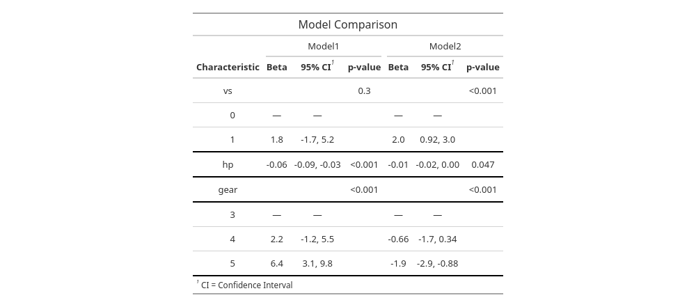

An R package designed to create professional, publication-ready summary tables.
Generates summary tables, including descriptive statistics, regression results, and statistical tests.
Primarily used in medical and statistical reporting but versatile for a variety of applications.
Note
relies on other packages such as dplyr, purr, tidyverse so install these prior
Generates summary statistics like mean, median, standard deviation, etc automatically.
Supports linear, logistic, and Cox proportional hazards regression
Allows users to modify table appearance and content as per their needs.
we use air quality data set as an working example
mpg cyl disp hp drat wt qsec vs am gear carb
Mazda RX4 21.0 6 160 110 3.90 2.620 16.46 0 1 4 4
Mazda RX4 Wag 21.0 6 160 110 3.90 2.875 17.02 0 1 4 4
Datsun 710 22.8 4 108 93 3.85 2.320 18.61 1 1 4 1
Hornet 4 Drive 21.4 6 258 110 3.08 3.215 19.44 1 0 3 1
Hornet Sportabout 18.7 8 360 175 3.15 3.440 17.02 0 0 3 2
Valiant 18.1 6 225 105 2.76 3.460 20.22 1 0 3 1Make sure that the class of each variable are correct.
| Characteristic | N = 321 |
|---|---|
| mpg | 19.2 (15.4, 22.8) |
| hp | 123 (96, 180) |
| qsec | 17.71 (16.89, 18.90) |
| vs | |
| 0 | 18 (56%) |
| 1 | 14 (44%) |
| gear | |
| 3 | 15 (47%) |
| 4 | 12 (38%) |
| 5 | 5 (16%) |
| 1 Median (Q1, Q3); n (%) | |
| Variable | 0 N = 181 |
1 N = 141 |
|---|---|---|
| mpg | 15.7 (14.7, 19.2) | 22.8 (21.4, 30.4) |
| hp | 180 (150, 230) | 96 (66, 110) |
| qsec | 17.02 (15.84, 17.42) | 19.17 (18.60, 20.00) |
| gear | ||
| 3 | 12 (67%) | 3 (21%) |
| 4 | 2 (11%) | 10 (71%) |
| 5 | 4 (22%) | 1 (7.1%) |
| 1 Median (Q1, Q3); n (%) | ||
add mean and standard deviation instead of quartiles, change column/row percentage
descriptive <- mydata %>%
select(mpg,hp, qsec, vs, gear) %>%
tbl_summary(
by = "vs",
statistic = list(
all_continuous() ~ "{mean} ({sd})",
all_dichotomous() ~ "{n} ({p}%)",
all_categorical() ~ "{n} ({p}%)"
),
missing = "no",
percent = "column", # You can change this to "row" if you want row percentages instead
digits = list(all_categorical() ~ c(0, 1))
) %>%
modify_header(label ~ "Variable")
descriptive| Variable | 0 N = 181 |
1 N = 141 |
|---|---|---|
| mpg | 16.6 (3.9) | 24.6 (5.4) |
| hp | 190 (60) | 91 (24) |
| qsec | 16.69 (1.09) | 19.33 (1.35) |
| gear | ||
| 3 | 12 (66.7%) | 3 (21.4%) |
| 4 | 2 (11.1%) | 10 (71.4%) |
| 5 | 4 (22.2%) | 1 (7.1%) |
| 1 Mean (SD); n (%) | ||
descriptive <- mydata %>%
select(mpg,hp, qsec, vs, gear) %>%
tbl_summary(
by = "vs",
statistic = list(
all_continuous() ~ "{mean} ({sd})",
all_dichotomous() ~ "{n} ({p}%)",
all_categorical() ~ "{n} ({p}%)"
),
missing = "no",
percent = "column",
digits = list(all_categorical() ~ c(0, 1))
) %>%
add_overall() %>% # Add overall column
add_p(
test = list(
all_continuous() ~ "t.test", # t-test for continuous variables
all_categorical() ~ "chisq.test" # chi-square test for categorical variables
),
pvalue_fun = ~style_pvalue(.x, digits = 3) # Optionally set the number of digits for p-values
) %>%
modify_header(label ~ "**Variable**") %>% # Modify the header
modify_spanning_header(c("stat_0", "stat_1", "stat_2") ~ "**VS**") %>%
bold_labels()
descriptive| Variable |
VS
|
p-value | ||
|---|---|---|---|---|
| Overall N = 321 |
0 N = 181 |
1 N = 141 |
||
| mpg | 20.1 (6.0) | 16.6 (3.9) | 24.6 (5.4) | |
| hp | 147 (69) | 190 (60) | 91 (24) | |
| qsec | 17.85 (1.79) | 16.69 (1.09) | 19.33 (1.35) | |
| gear | ||||
| 3 | 15 (46.9%) | 12 (66.7%) | 3 (21.4%) | |
| 4 | 12 (37.5%) | 2 (11.1%) | 10 (71.4%) | |
| 5 | 5 (15.6%) | 4 (22.2%) | 1 (7.1%) | |
| 1 Mean (SD); n (%) | ||||
descriptive_modified <- descriptive %>%
as_gt() %>%
gt::tab_options(
table.font.size = "small",
heading.title.font.size = "medium",
heading.subtitle.font.size = "small"
) %>%
gt::tab_header(
title = "Descriptive Analysis of mtcars"
) %>%
gt::cols_align(
align = "center",
columns = everything()
) %>%
gt::tab_style(
style = cell_borders(
sides = "bottom",
color = "black",
weight = px(2)
),
locations = cells_body(
columns = everything(), # style to all columns in the table, not just specific ones
rows = c(1, 2, 3,7) # bottom border will only be applied to
)
) %>%
gt::tab_style(
style = cell_text(weight = "bold"), # Makes the text of row group labels bold.
locations = cells_row_groups()
)
descriptive_modified| Descriptive Analysis of mtcars | ||||
|---|---|---|---|---|
| Variable |
VS
|
p-value | ||
| Overall N = 321 |
0 N = 181 |
1 N = 141 |
||
| mpg | 20.1 (6.0) | 16.6 (3.9) | 24.6 (5.4) | |
| hp | 147 (69) | 190 (60) | 91 (24) | |
| qsec | 17.85 (1.79) | 16.69 (1.09) | 19.33 (1.35) | |
| gear | ||||
| 3 | 15 (46.9%) | 12 (66.7%) | 3 (21.4%) | |
| 4 | 12 (37.5%) | 2 (11.1%) | 10 (71.4%) | |
| 5 | 5 (15.6%) | 4 (22.2%) | 1 (7.1%) | |
| 1 Mean (SD); n (%) | ||||
Now you can format the tables as you like by adding more commands
| Characteristic | Beta | 95% CI1 | p-value |
|---|---|---|---|
| vs | |||
| 0 | — | — | |
| 1 | 1.8 | -1.7, 5.2 | 0.3 |
| hp | -0.06 | -0.09, -0.03 | <0.001 |
| gear | |||
| 3 | — | — | |
| 4 | 2.2 | -1.2, 5.5 | 0.2 |
| 5 | 6.4 | 3.1, 9.8 | <0.001 |
| 1 CI = Confidence Interval | |||
| Characteristic | Beta | 95% CI1 | p-value |
|---|---|---|---|
| vs | 0.3 | ||
| 0 | — | — | |
| 1 | 1.8 | -1.7, 5.2 | |
| hp | -0.06 | -0.09, -0.03 | <0.001 |
| gear | <0.001 | ||
| 3 | — | — | |
| 4 | 2.2 | -1.2, 5.5 | |
| 5 | 6.4 | 3.1, 9.8 | |
| 1 CI = Confidence Interval | |||
Tip
For logistic models you can add exponentiate = TRUE, command to get the odds ratio
mod1<- lm(qsec ~ vs + hp +gear, data = mydata)
table_model_1 <- tbl_regression(
mod1
) %>%
add_global_p(anova_fun = gtsummary::tidy_wald_test)
# Merge the regression tables for comparison
comparison_table <- tbl_merge(
tbls = list(table_model, table_model_1),
tab_spanner = c("Model1","Model2")
)
comparison_table| Characteristic |
Model1
|
Model2
|
||||
|---|---|---|---|---|---|---|
| Beta | 95% CI1 | p-value | Beta | 95% CI1 | p-value | |
| vs | 0.3 | <0.001 | ||||
| 0 | — | — | — | — | ||
| 1 | 1.8 | -1.7, 5.2 | 2.0 | 0.92, 3.0 | ||
| hp | -0.06 | -0.09, -0.03 | <0.001 | -0.01 | -0.02, 0.00 | 0.047 |
| gear | <0.001 | <0.001 | ||||
| 3 | — | — | — | — | ||
| 4 | 2.2 | -1.2, 5.5 | -0.66 | -1.7, 0.34 | ||
| 5 | 6.4 | 3.1, 9.8 | -1.9 | -2.9, -0.88 | ||
| 1 CI = Confidence Interval | ||||||
comparison_table_final <- as_gt(comparison_table) %>%
gt::tab_options(
table.font.size = "small",
heading.title.font.size = "medium",
heading.subtitle.font.size = "small"
) %>%
gt::tab_header(
title = "Model Comparison"
) %>%
gt::cols_align(
align = "center",
columns = everything()
) %>%
gt::tab_style(
style = cell_text(weight = "bold"),
locations = cells_column_labels(
columns = everything()
)
) %>%
gt::tab_style(
style = cell_borders(
sides = "bottom",
color = "black",
weight = px(2)
),
locations = cells_body(
columns = everything(),
rows = c(3, 4, 5,8)
)
) %>%
gt::tab_style(
style = cell_text(weight = "bold"),
locations = cells_row_groups()
)
comparison_table_final| Model Comparison | ||||||
|---|---|---|---|---|---|---|
| Characteristic |
Model1
|
Model2
|
||||
| Beta | 95% CI1 | p-value | Beta | 95% CI1 | p-value | |
| vs | 0.3 | <0.001 | ||||
| 0 | — | — | — | — | ||
| 1 | 1.8 | -1.7, 5.2 | 2.0 | 0.92, 3.0 | ||
| hp | -0.06 | -0.09, -0.03 | <0.001 | -0.01 | -0.02, 0.00 | 0.047 |
| gear | <0.001 | <0.001 | ||||
| 3 | — | — | — | — | ||
| 4 | 2.2 | -1.2, 5.5 | -0.66 | -1.7, 0.34 | ||
| 5 | 6.4 | 3.1, 9.8 | -1.9 | -2.9, -0.88 | ||
| 1 CI = Confidence Interval | ||||||

Getting started with gtsummary